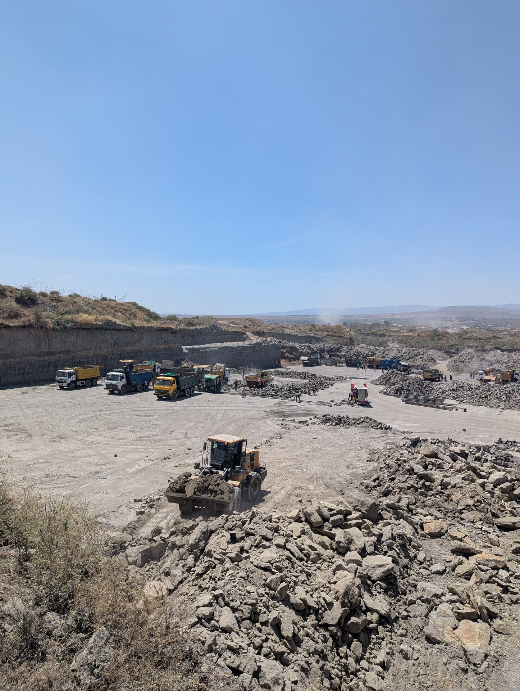
Quarry Materials, Delivered On Time
GBS supplies quality ballast, hardcore, sand and construction aggregates straight from the quarry to your site — hauled by our own fleet of dump trucks, so every load arrives on schedule.
Our Own Fleet
TATA dump trucks under our control end to end — no subcontracted delays.
On-Time Delivery
Scheduled loads and live coordination, so your site never waits on materials.
Quarry-Checked Quality
Every load is graded and inspected before it leaves the quarry.
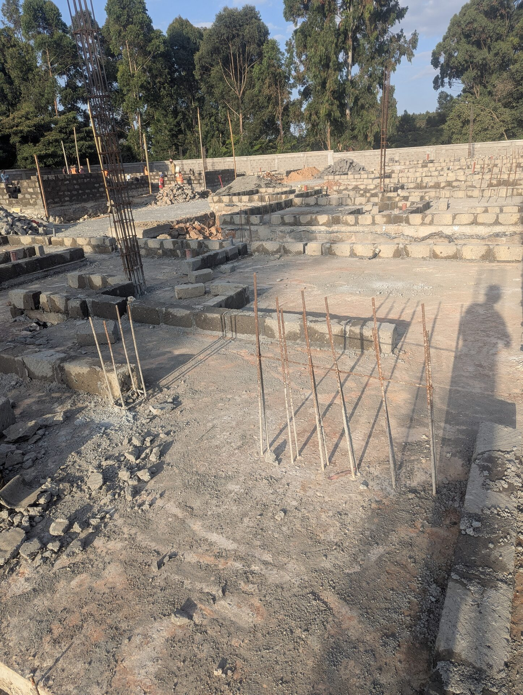
Built On the Quarry Floor, Not a Middleman's Desk
GBS — Generation Builders & Suppliers — is a quarry materials and haulage company. We supply construction aggregates: ballast, hardcore and sand, moved from quarry to site on our own fleet of dump trucks, so pricing and scheduling stay in our hands, not a broker's.
-
Direct From the Source
No middlemen between the quarry face and your delivery point.
-
Fleet We Control
Our own trucks mean we can commit to a delivery window and keep it.
-
Material You Can Trust
Every load is checked for grading and consistency before dispatch.
What We Supply
Quarry-direct materials and the haulage to move them, sized for both large contractors and individual builders.
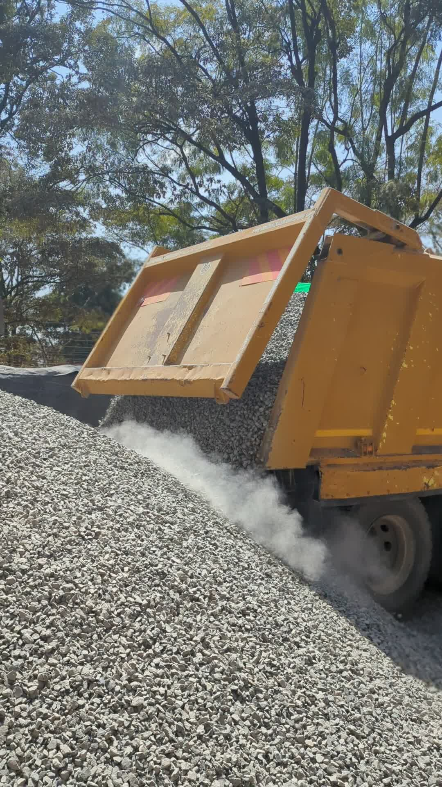
Ballast
Crushed stone graded for concrete work and structural fill, screened at the quarry.
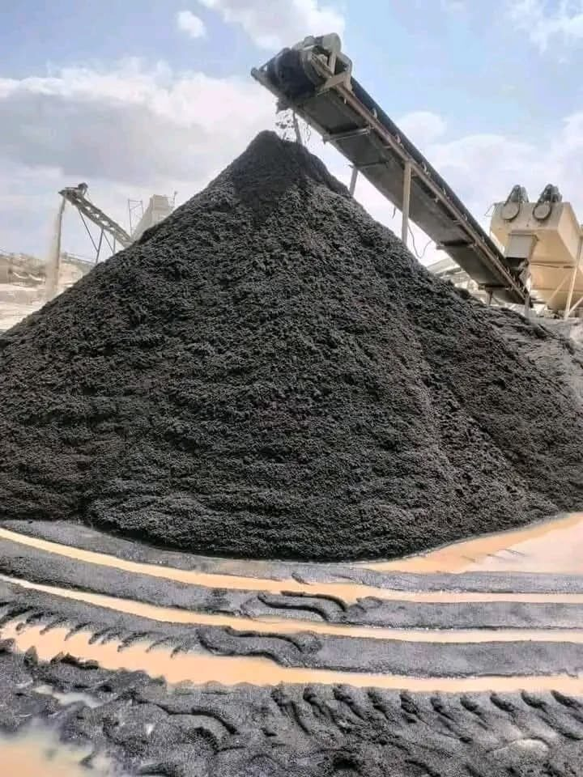
Rocksand
Crushed rock sand for concrete mixing and masonry work, screened at the quarry.
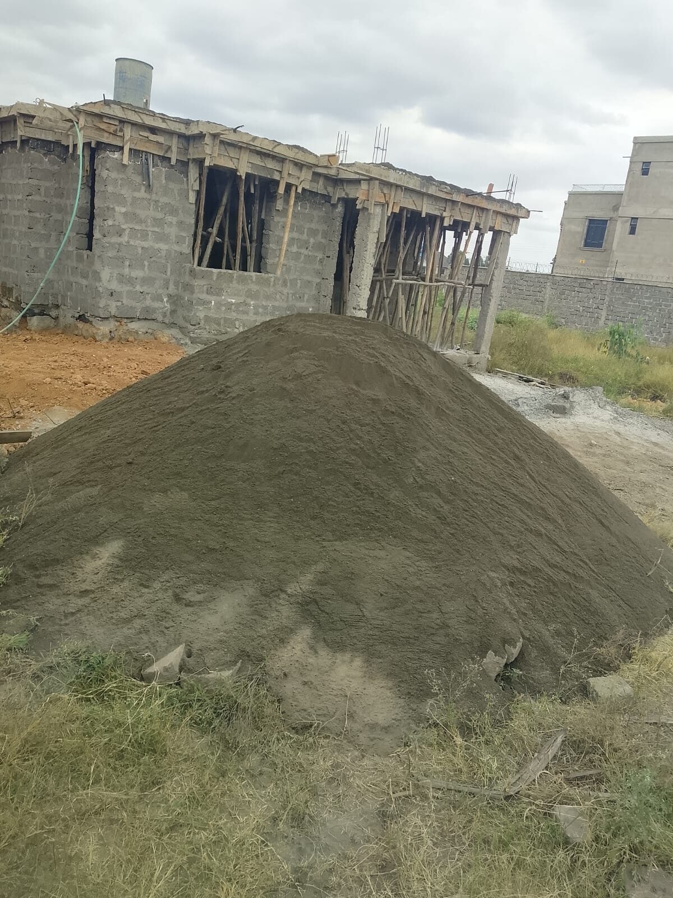
Dust
Fine quarry dust for blinding, backfilling and levelling work.
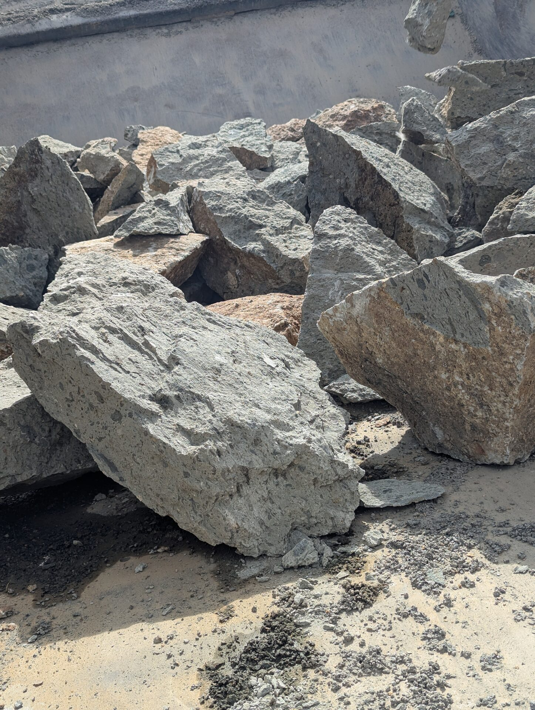
Hardcore
Solid broken stone for foundations, slabs and access roads.
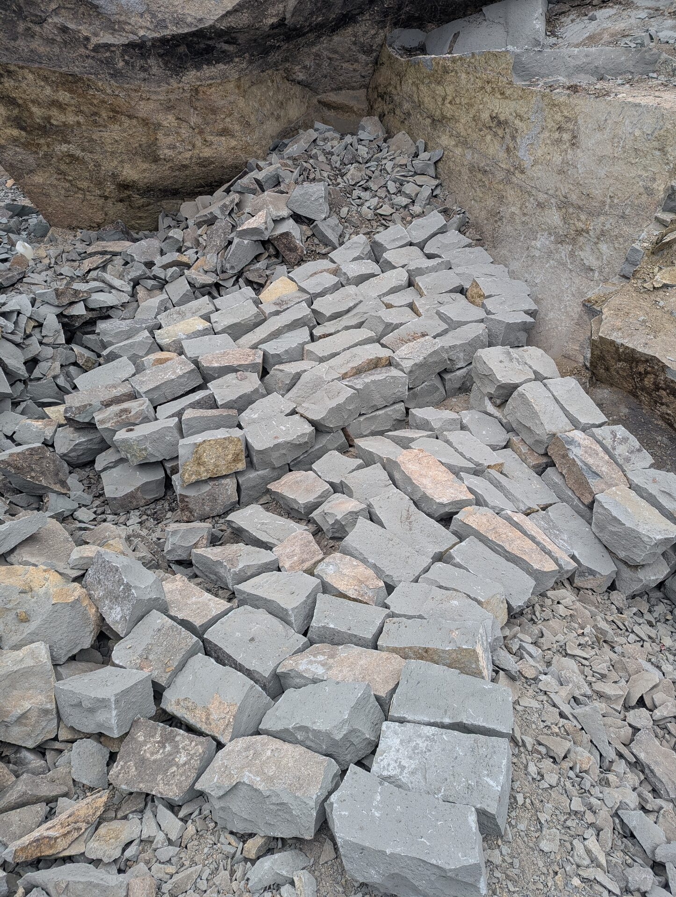
Foundation Stones
Sized stone for foundation walling and footing work.
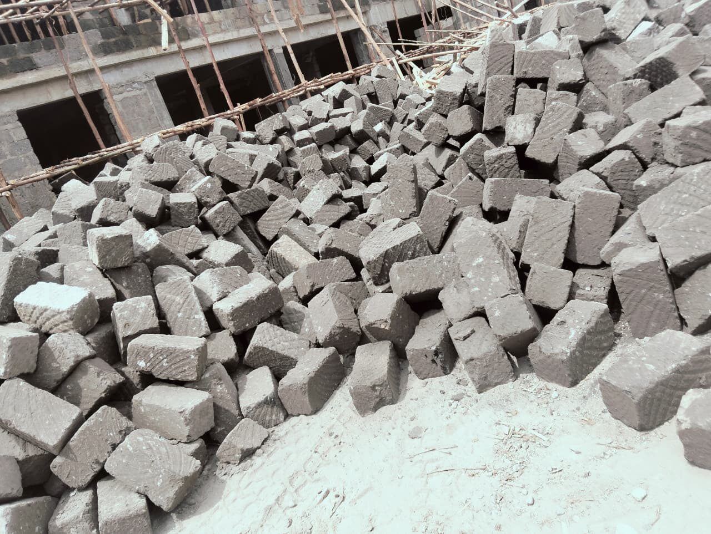
Machine Cut Stone
Uniform machine-cut blocks, ready for walling and construction.
How a Delivery Happens
From the quarry face to your foundation, in four steps.
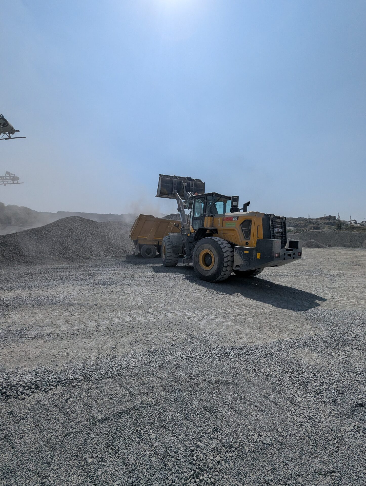
Loaded at the Quarry
Your order is pulled straight from the quarry stockpile and loaded onto one of our dump trucks.
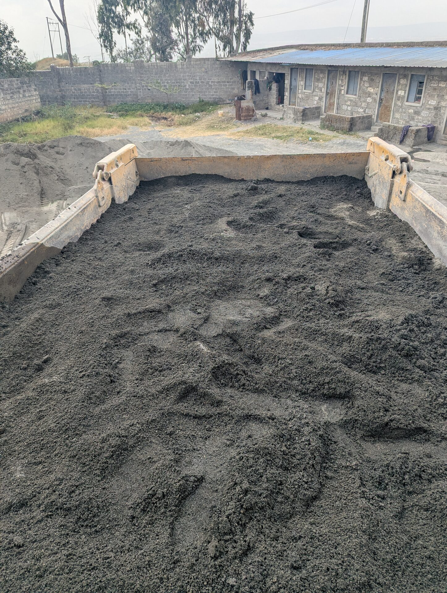
Weighed & Confirmed
Each load is checked before it leaves, so you get the volume you ordered, every time.
Delivered to Site
Our drivers coordinate arrival times directly with your site team, no waiting around.
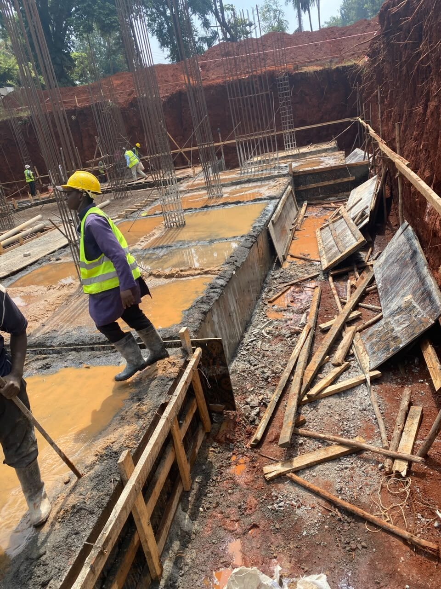
Ready to Build
Materials on the ground, on time, so your crew keeps moving.
See It In Action
Short clips from the quarry and the road.
Ballast Delivery
A load being tipped on site.
Quarry at Work
Operations on the quarry floor.
On the Move
Trucks rolling out after dark.
Need Materials on Site This Week?
Tell us the material, the quantity and the site location — we'll get back to you with a delivery schedule and a quote.
What Contractors Say
A few notes from the sites we've supplied.
Common Questions
What contractors and site owners usually ask before their first order.
Ballast, hardcore and sand, all sourced and graded at the quarry before dispatch. See the Services page for the full list.
We're based in Nairobi and deliver nationwide across Kenya — tell us your site location and we'll confirm a delivery plan.
Send us the material, quantity and site location through the quote form or a call, and we'll confirm a delivery window from our own fleet.
Yes — samples and quarry visits can be arranged for contractors ordering in bulk.
Our dump trucks are available for bulk haulage beyond our own quarry materials — ask us about availability.